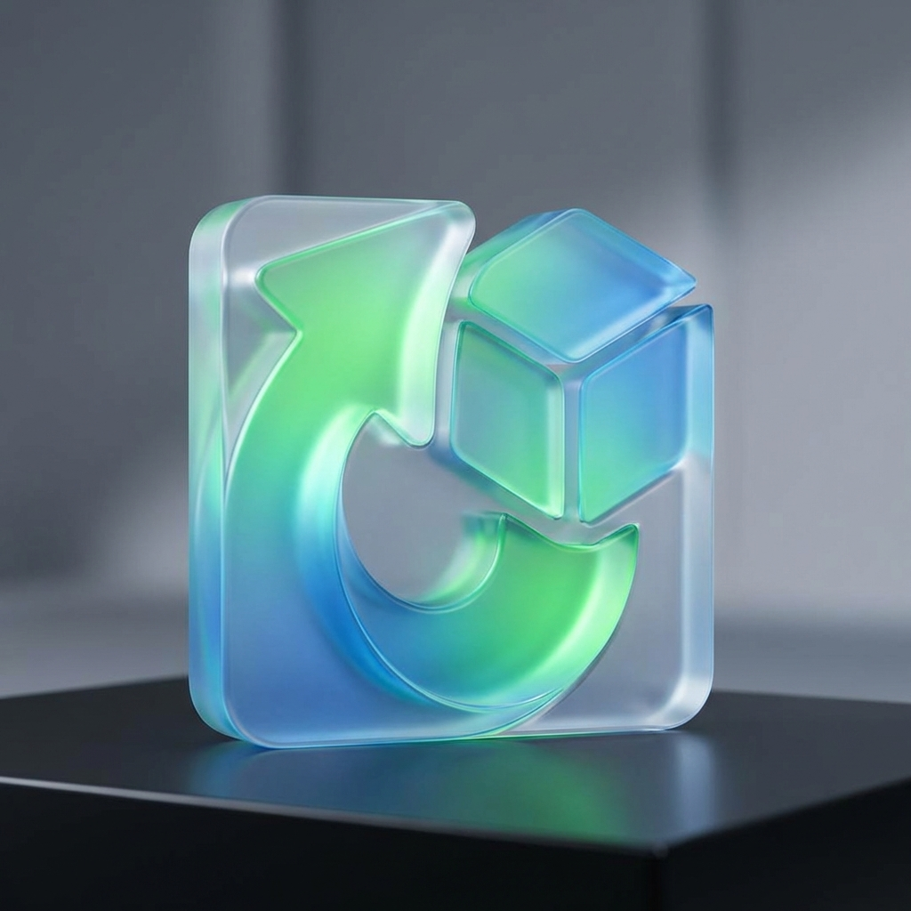

Jangan Biarkan Ketidakpastian 2026 Mengubur Ambisimu.
Saat Dunia Semakin Keras, Kamu Harus Semakin Cerdas.
Tahun ini diprediksi menjadi masa paling menantang dalam satu dekade. Apakah Anda akan tergerus zaman, atau justru mencetak sejarah baru?
Kami mengumpulkan berita terbaru yang membuat banyak orang gentar melangkah tahun ini:
"Inflasi biaya hidup mencapai titik kritis baru di 2026, memaksa kelas menengah untuk mencari sumber pendapatan alternatif."
"Otomatisasi AI kini menggantikan 30% pekerjaan administratif. Persaingan kerja bukan lagi sesama manusia, tapi lawan algoritma."
"Tingkat 'Burnout' global mencatat rekor tertinggi di awal 2026 akibat tekanan adaptasi digital yang terlalu cepat."
Tapi tunggu... Berita buruk berhenti di sini.
Bagi 1% orang yang siap, kekacauan ini adalah tangga menuju kesuksesan.
Apa yang Membedakan Pemenang di 2026?
Mimpi di tahun 2026 tidak bisa diraih dengan "kerja keras" gaya lama. Anda membutuhkan strategi baru yang kami sebut The 2026 Resilience Framework.
Kami telah merangkum panduan eksklusif untuk membantu Anda:
Kami telah merangkum panduan eksklusif untuk membantu Anda:

Cara menguasai skill baru (AI & Digital) dalam hitungan minggu, bukan tahun.
Teknik psikologi untuk tetap fokus mengejar mimpi saat berita negatif membanjiri timeline.
Strategi membangun safety net keuangan di tengah ekonomi yang fluktuatif.
“Saya hampir menyerah di awal tahun karena PHK massal. Tapi dengan mengubah mindset dan strategi sesuai panduan ini, saya justru membuka bisnis konsultan sendiri bulan lalu. 2026 ternyata bukan akhir, tapi awal baru.”
— Sarah, 28 Tahun (Creative Freelancer)
Ini adalah komitmen Anda pada diri sendiri untuk tidak menyerah pada keadaan.
Apakah Anda siap mengubah tahun terberat ini menjadi tahun terbaik Anda?
SAYA MAU MENGGAPAI MIMPI(Klik di sini untuk memulai transformasi 2026)